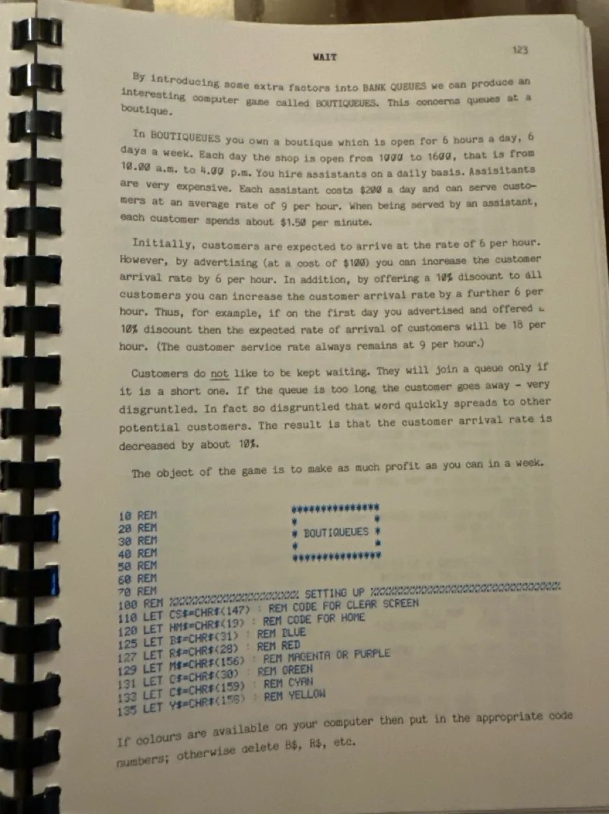
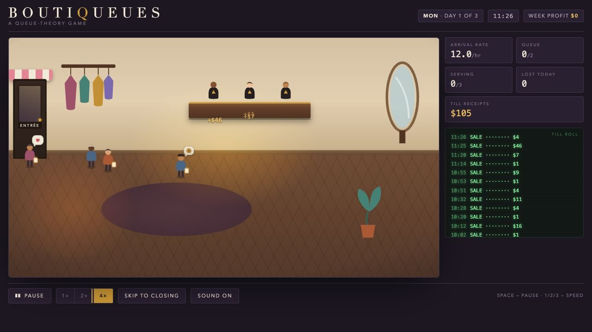

A programme waiting to be played again
I found Boutiqueues as a printed BASIC listing in a 1984 book about programming your microcomputer. You own a shop for six days, choosing staff, advertising and discounts while impatient customers quietly determine whether the business thrives.
The original was compact and mathematical. I preserved its core model, then extended the simulation with new levels, customer psychology, amenities, changing demand and a longer season. The new version makes every consequence visible: customers enter, wait, storm out, gossip and reshape tomorrow’s demand.

Then and now
The model became a place
The printed programme supplies the rules. The restaging supplies atmosphere, legibility and a shop floor worth watching.
Classic Mode keeps the original six-day challenge intact. A new learning ladder gradually introduces the ideas hidden inside it.

Watch
Consequences on the floor
Staffing, queues and customer patience are animated rather than buried in a spreadsheet.
Learn
Insight after experience
The Consultant’s Notebook explains a phenomenon only after the player has lived through it.
Balance
Thousands of simulated weeks
A headless harness tests strategies and ensures each level’s lesson is genuinely required.
Extending the original simulation
The six levels move from staffing and spare capacity through advertising, customer psychology, shaped demand and finally a four-week season. Each new complexity had to create a visible consequence and a real morning decision.
The aim was not to decorate the mathematics. It was to make the behaviour inside the original program richer, more legible and delightful to notice.
“The consultant does not explain in advance.”
The street is getting busy.
Open the shop, choose your staff and discover what the queue knows.
Play Boutiqueues